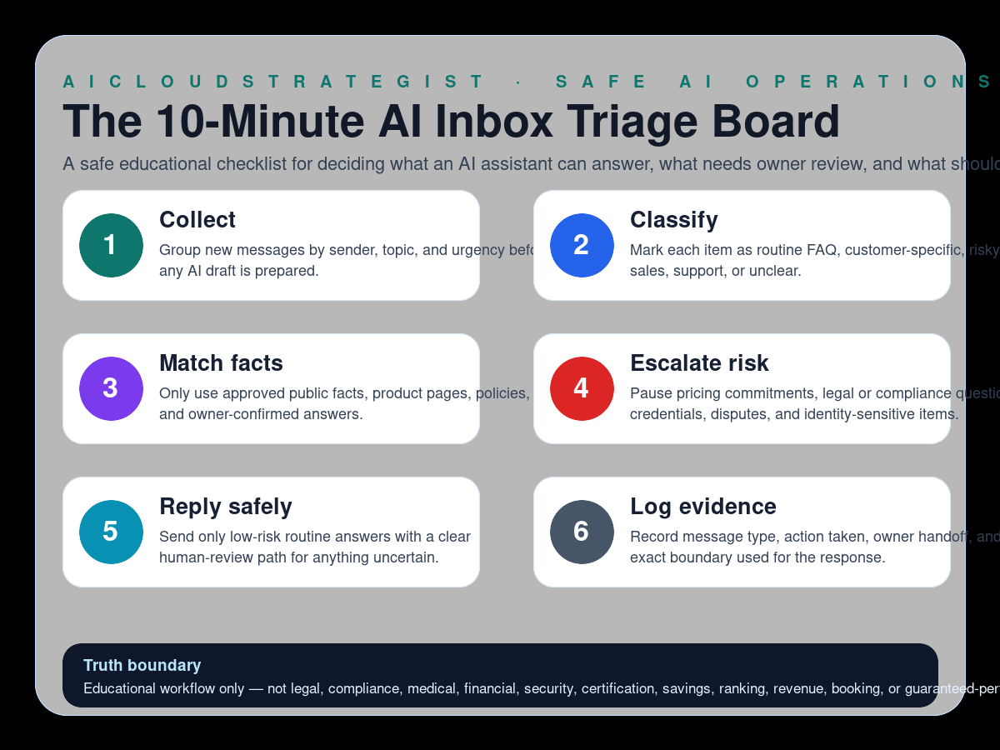

Safe educational AI workflow
The 10-Minute AI Inbox Triage Board
A safe educational checklist for deciding what an AI assistant can answer, what needs owner review, and what should stay untouched.

Six checks before an AI assistant replies
- Collect: Group new messages by sender, topic, and urgency before any AI draft is prepared.
- Classify: Mark each item as routine FAQ, customer-specific, risky, sales, support, or unclear.
- Match facts: Only use approved public facts, product pages, policies, and owner-confirmed answers.
- Escalate risk: Pause pricing commitments, legal or compliance questions, credentials, disputes, and identity-sensitive items.
- Reply safely: Send only low-risk routine answers with a clear human-review path for anything uncertain.
- Log evidence: Record message type, action taken, owner handoff, and the exact boundary used for the response.
How to use this board
Use the board as a short morning review before allowing automation to touch customer-facing messages. The goal is simple: routine facts can move faster; uncertain, sensitive, or commitment-heavy items pause for an owner.
Truth boundary
Educational workflow only — not legal, compliance, medical, financial, security, certification, savings, ranking, revenue, booking, or guaranteed-performance advice.